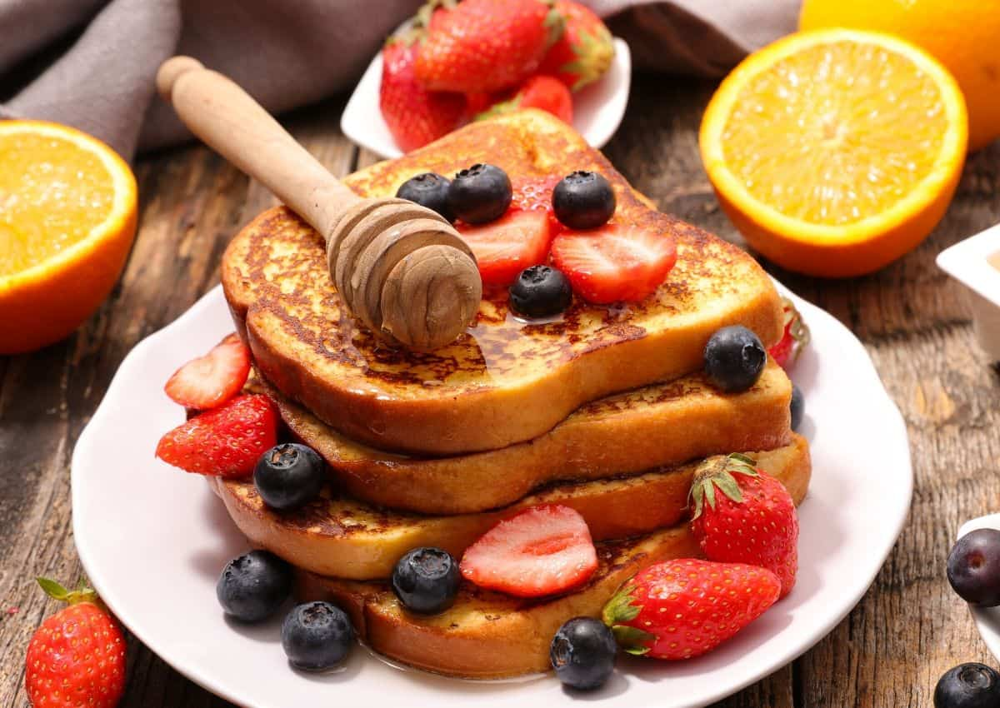

French Toasts
25Mins

Ingredients:
Preparation:
Step 1
Mezclar todos los ingredientes dejando de lado el pan.
Step 2
Una vez bien incorporados los ingredientes, tomamos el pan y lo remojamos en la mezcla.
Step 3
En una sarten engrasamos un poco con mantequilla en barra y ponemos nuestras rodajas de pan a freir.
Step 4
Asegurarse de que ambos lados queden dorados a gusto.
Step 5
Para mayor sabor, podemos espolvorear un poco de azucar en la sarten, colocamos la rodaja de pan encima y dejamos que se derrita un poco el azucar y luego rapidamente le damos vuelta. Esto crea una capa delgada de caramelo que brinda un gran sabor a nuestra tostada.
Step 6
A gusto propio, puedes poner las tostadas en el horno para que queden mas crujientes pero es opcional.